<!doctype html>
<html lang="de">
  <head>
    <meta charset="utf-8">

		<title>How to work with Gephi</title>

		<meta name="description" content="A workshop on how to work with Gephi for network analysis.">
		<meta name="author" content="Roman Kuhn">

		<meta name="apple-mobile-web-app-capable" content="yes">
		<meta name="apple-mobile-web-app-status-bar-style" content="black-translucent">

		<meta name="viewport" content="width=device-width, initial-scale=1.0, maximum-scale=1.0, user-scalable=no, minimal-ui">

    <link rel="stylesheet" href="dist/reveal.css">
    <link rel="stylesheet" href="dist/theme/sky.css">
  </head>
  <body>
    <div class="reveal">
      <div class="slides">
         <section data-background-image="media/Logo_StabiLab_4c.svg" data-background-position="top 40px right 30px"
				data-background-size="150px" data-markdown data-separator="^\n---\n" data-separator-vertical="^\n--\n" data-separator-vertical="^\n--\n" data-charset="utf-8">
          <script type="text/template">
          <!--content goes here-->

          ### How to work with Gephi for network analysis

          Summer School: Open(ing) Science? Digital Humanities in Area Studies
          


          July 10 2025


          ---
          
          
          [Slides](https://r0man-ist.github.io/DHAreaStudies-Gephi/): https://t1p.de/twxzx

          Data: https://github.com/r0man-ist/DHAreaStudies-Gephi

          Contact: roman.kuhn@sbb.spk-berlin.de

---

---

### Before we start

Gephi

https://gephi.org/users/download/


---
### Networks


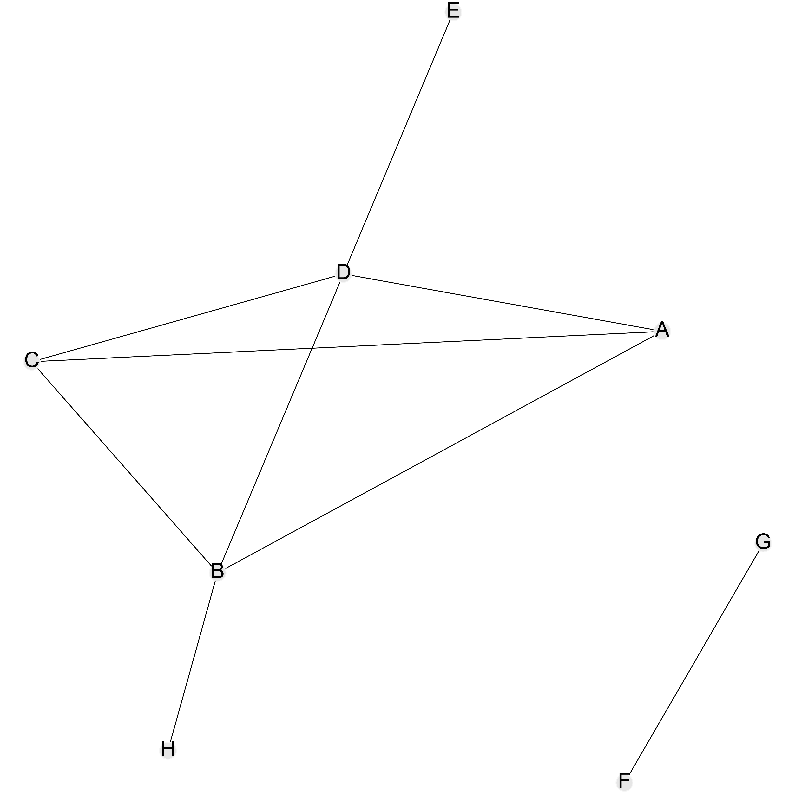

--

### Nodes and Edges

<pre><code data-trim data-noescape>
  A,B
  A,C
  B,C
  D,A
  D,E
  D,B
  D,C
  F,G
  H,B
</code></pre>

--

### ... the same network ...

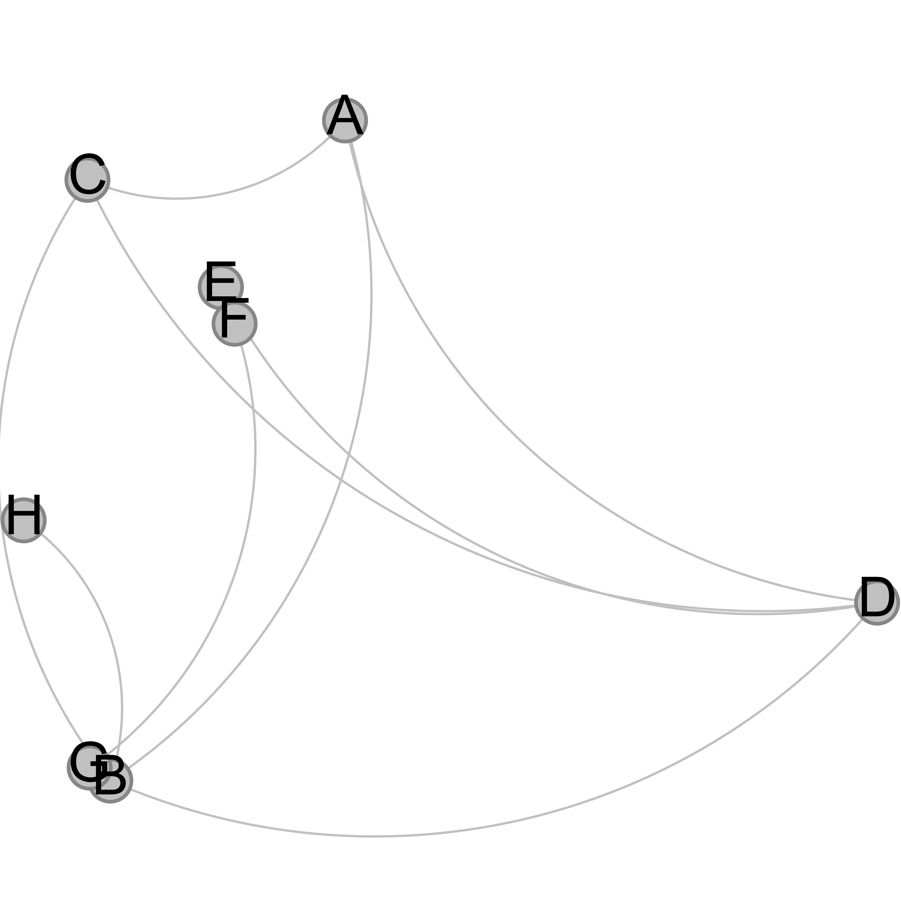

--

### ... and the same again ...

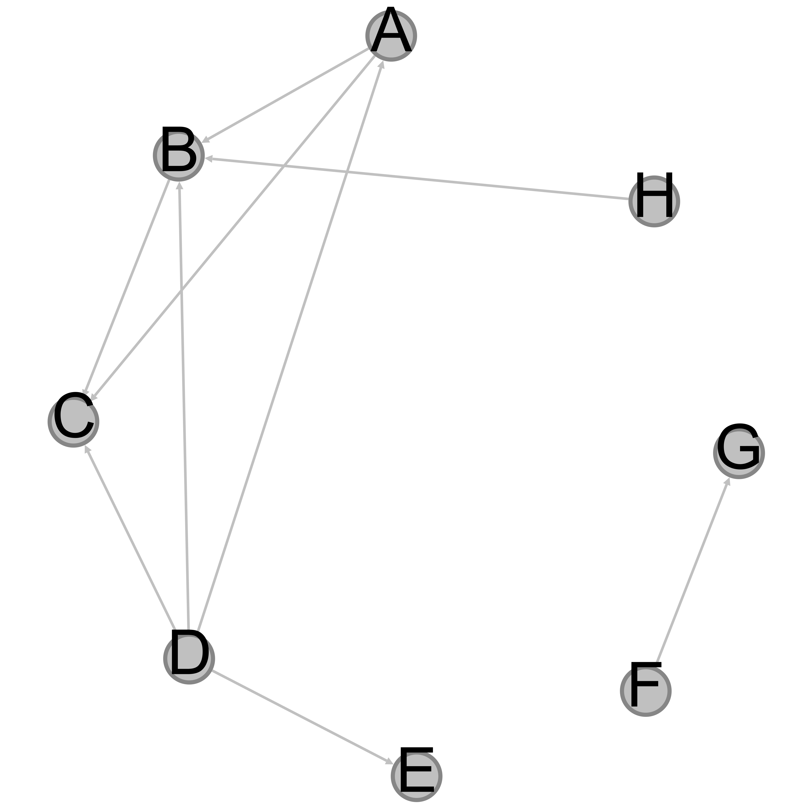

--

### ... again ...

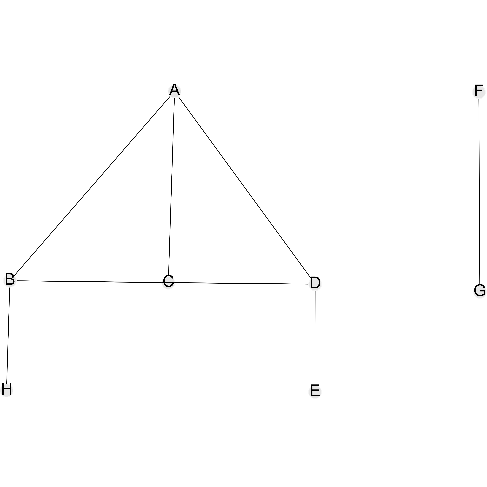

--

### ... and again ...


--

### ... and once more

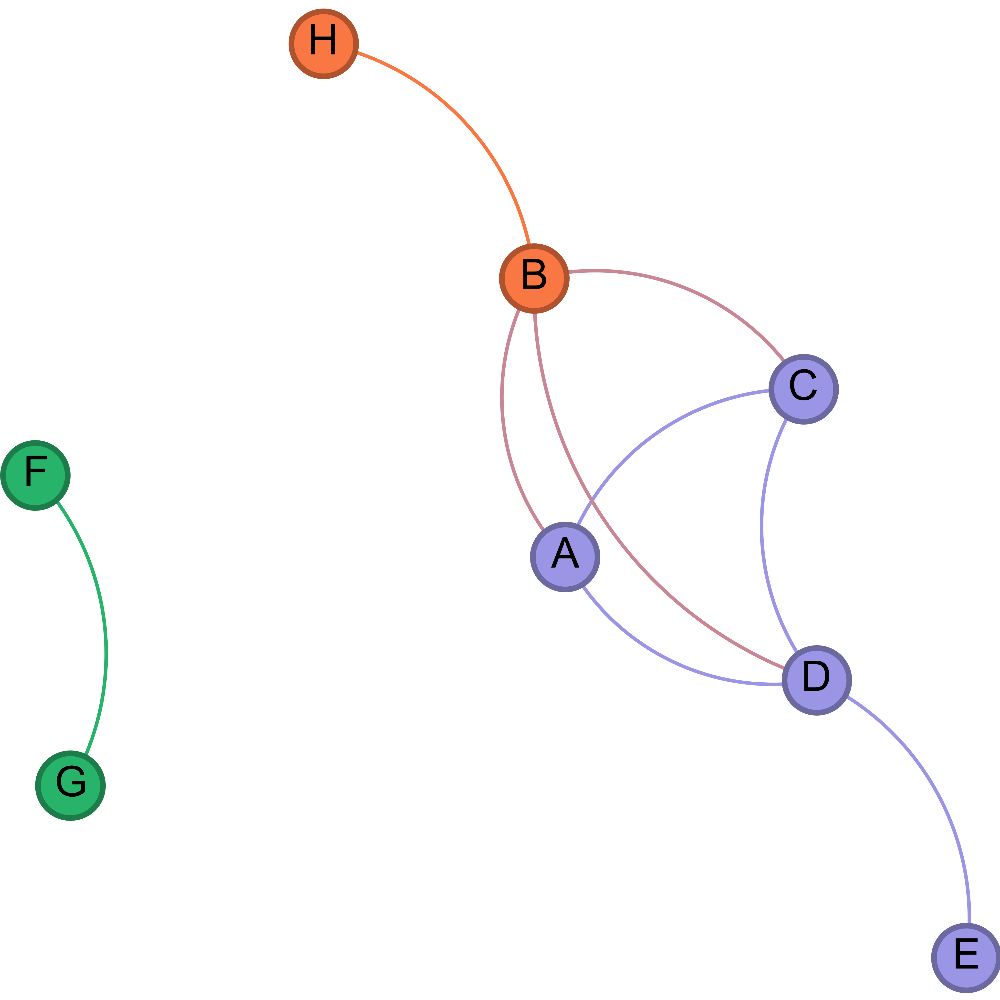

--

### ... the same (?) network as bipartite network

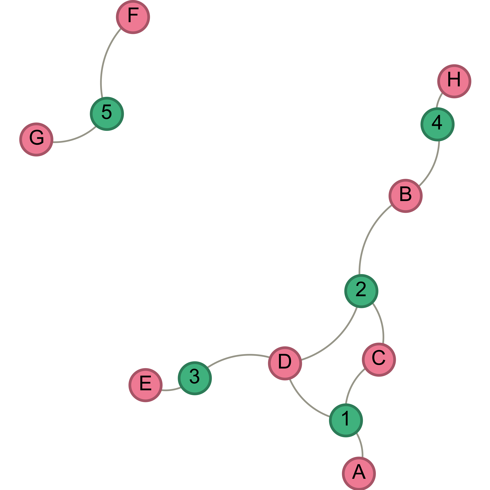

---

## Networks

- Uni- or n-partite
- Directed, undirected edges
- Weighted or unweighted
- Layout algorithms / -techniques
- Metrics
  - Degree
  - Betweenness
  - PageRank
  - etc.


--

  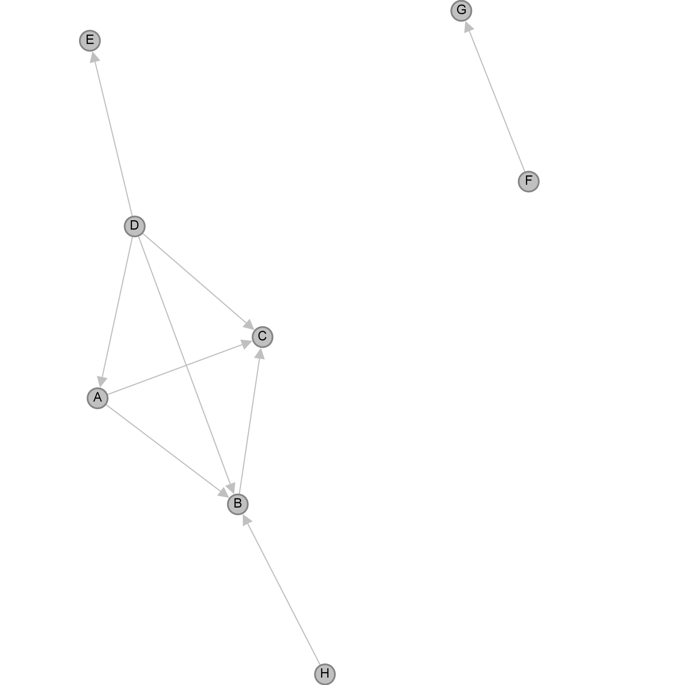

--

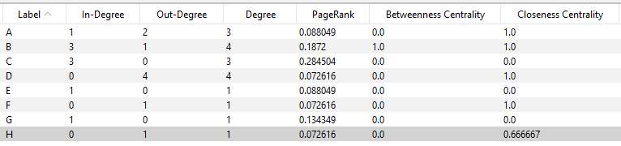


--


Metrics (and how to apply them) depend on the type of network (un/directed, bi-/unipartite)

--

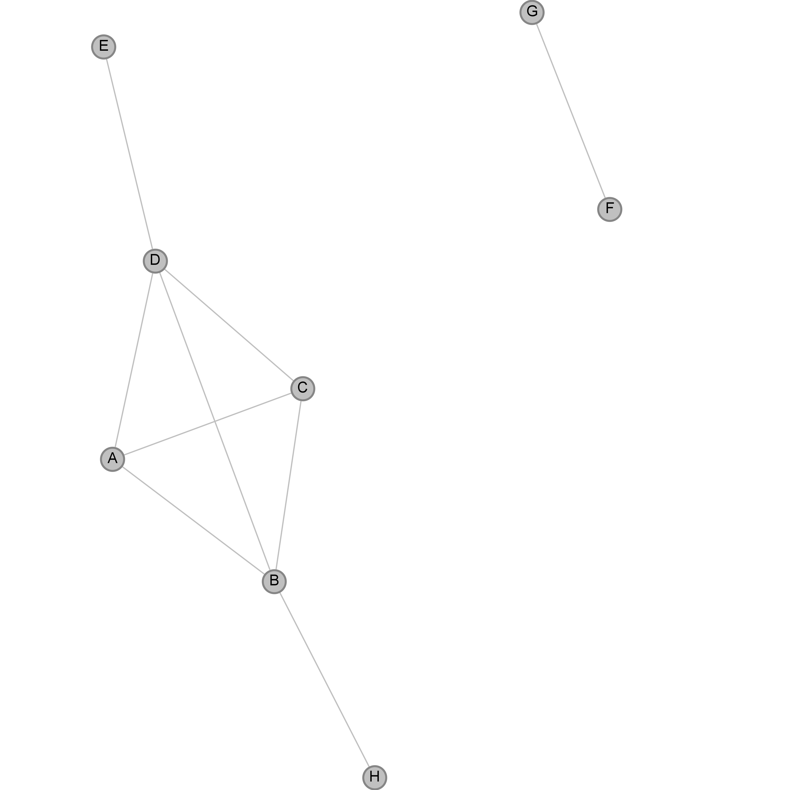

--

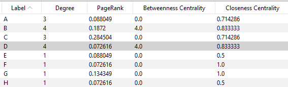


--

### ... the same network again, nodes weighted by PageRank

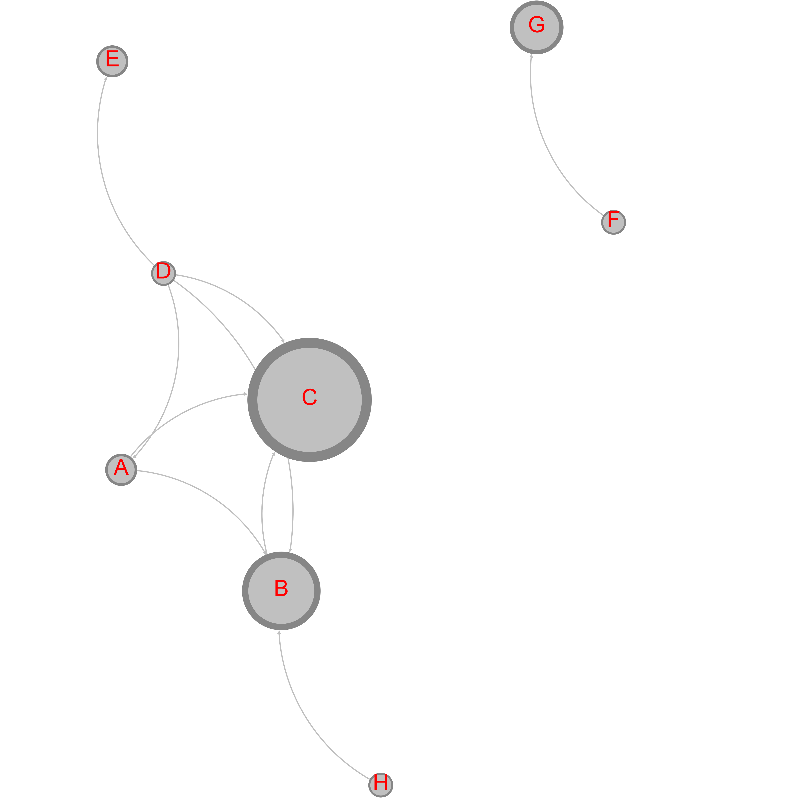


---

### Gephi

[Download](https://gephi.org/users/download/)

[Tutorials and Collections](https://gephi.org/users/)


--

### Mapping Letters
https://www.martingrandjean.ch/gephi-introduction/

--


--

### Voltaire's Correspondence

1825 [Nodes](https://raw.githubusercontent.com/r0man-ist/tooltuesday/main/Volt_Corresp_nodes.csv) (Senders/Recipients)
21257 [Edges](https://raw.githubusercontent.com/r0man-ist/tooltuesday/main/Volt_Corresp_edges.csv) (Letters)

--


--

### Bi-partite network

Horace in Voltaire's Correspondence

190 [Nodes](https://raw.githubusercontent.com/r0man-ist/tooltuesday/main/Volt_Horaz_nodes.csv) -- 123 Persons, 67 Texts
450 [Edges](https://raw.githubusercontent.com/r0man-ist/tooltuesday/main/Volt_Horaz_edges.CSV)

--

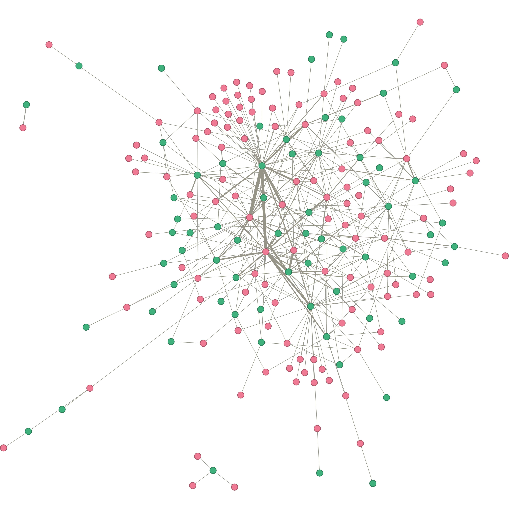

---

### Resources

https://www.martingrandjean.ch/gephi-introduction/

https://book.archnetworks.net/

https://historicalnetworkresearch.org/

https://historicalnetworkresearch.org/external-resources/

https://www.zotero.org/groups/209983/historical_network_research

--

### Introduction
<a href="https://doi.org/10.1017/9781108866804" target="_blank">
  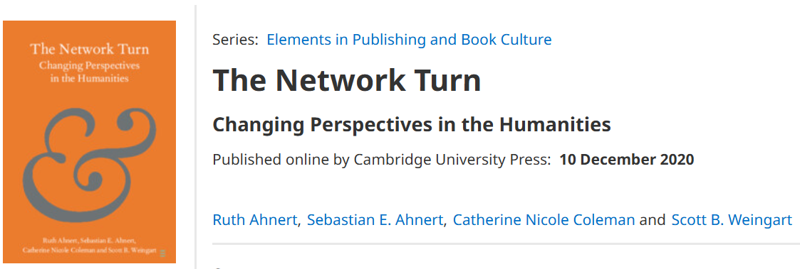
  <div class="caption">
    <p>Ahnert, Ahnert, Coleman, Weingart: The Network Turn</p>
  </div>

--

### Code

<a href="https://igraph.org/">igraph</a> (R, python)

<a href="https://networkx.org/">NetworkX</a> (python)


---

## Thanks!


Survey: http://sbb.berlin/vxr2f 


roman.kuhn@sbb.spk-berlin.de

</section>
         
        </script>
        
      </div></div></body>
    </div>
    <script src="raphael-min.js"><
      <script src="flowchart-latest.js"></script>
    <script src="dist/reveal.js"></script>
    <script src="plugin/markdown/markdown.js"></script>
    
    <script>
      Reveal.initialize({
    plugins: [ RevealMarkdown ]
  });
    </script>
    

  </body>
</html>